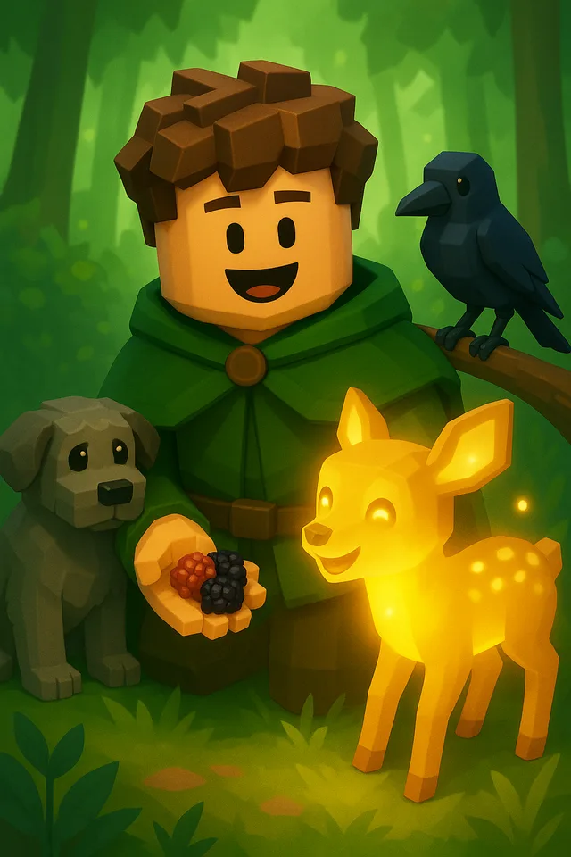

Active development
Call of the Druid
A light-fantasy world shaped by Celtic and Gallic influence, nature, folklore, and the trust, capture, and bonding systems connecting druids with creatures.
Our worlds
Nature-first adventures where discovery, companionship, and atmosphere matter.

Active development
A light-fantasy world shaped by Celtic and Gallic influence, nature, folklore, and the trust, capture, and bonding systems connecting druids with creatures.
Next on the horizon
Future titles will be announced as they move into active development.